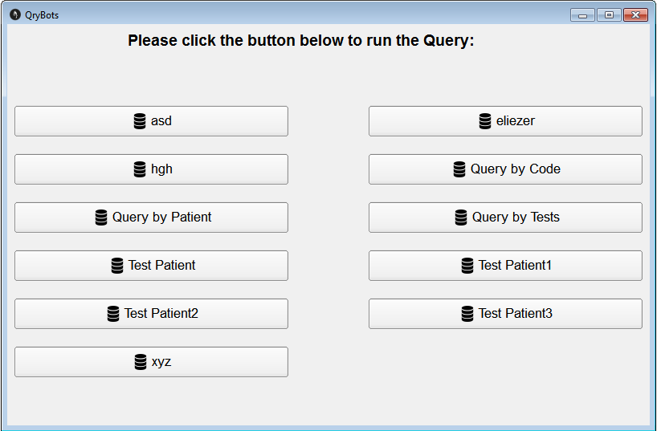
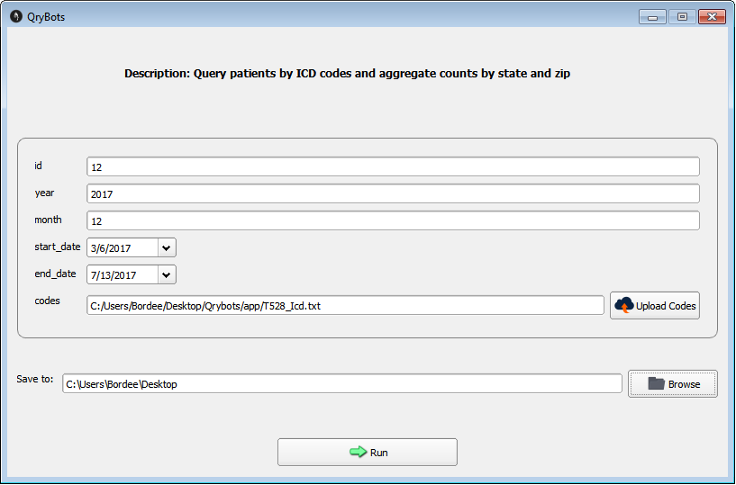

 As you can see there are some bunch of buttons placed in a grid. These buttons are generated dynamically depending on the number of xml files available in the config folder of the project." width="auto" height="700" />
 The GUI that you see here is also generated dynamically after reading the xml file. All these fields are the attributes of the xml files. After you fill up all the fields. The app starts to read the .sql file, which contains all the sql queries needed to generate report. It creates a translated sql file in which all the values of the column is replaced with the value we inserted. Hence generating reports in the form of excel files." width="auto" height="700" style="margin-top: 80px;" />